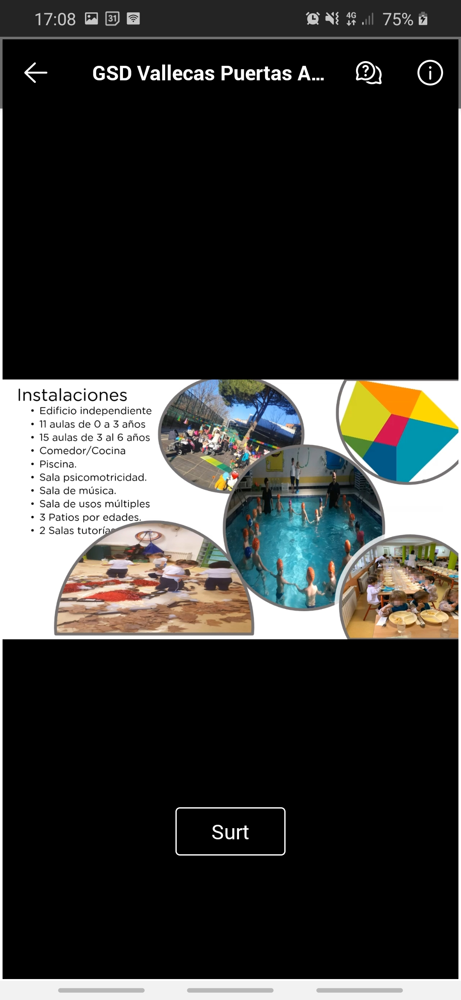
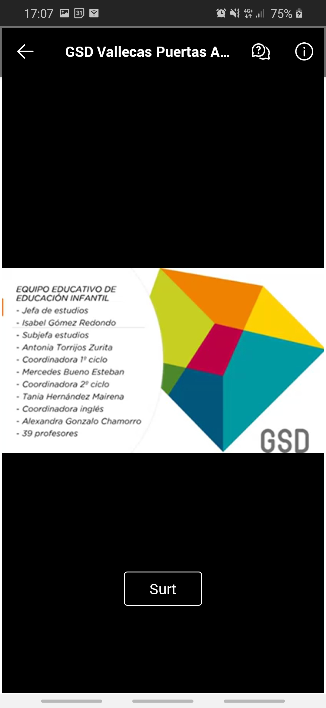

Director:
Es una cooperativa de colegios
Hasta los dieciocho años
Es bilingüe, con francés como segundo idioma.
Tienen un aula TDA.
Directora de infantil:
Isabel Gomez
Proyecto educativo rico
Se les pide a las familias una aportación económica
Capturas de pantalla:

